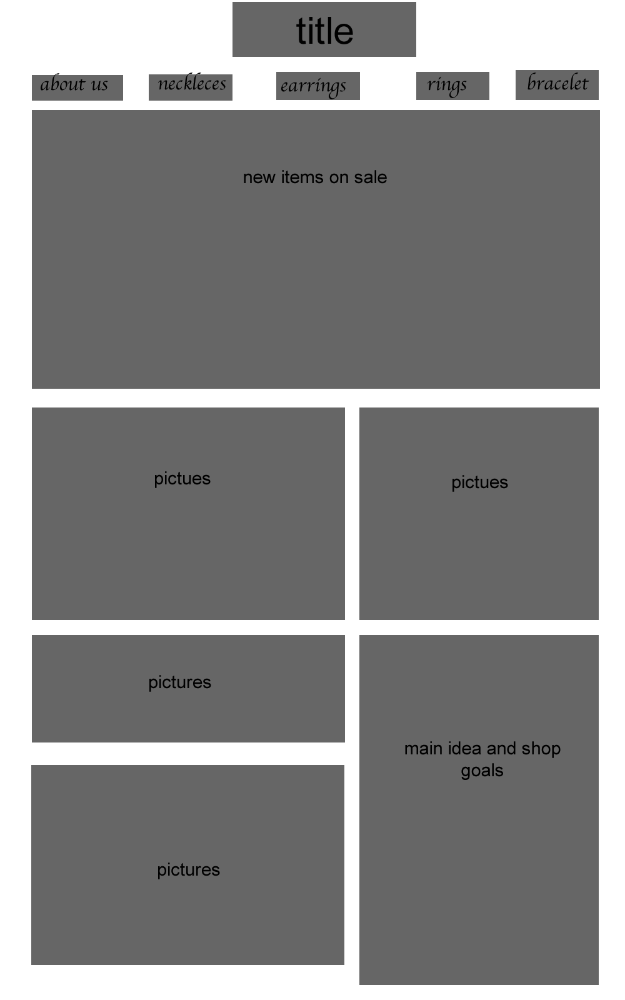

Ankeeta Raja's Planning site
Check out my home page homepage
How I made my homepage
To check the subpages I have made
Click here
To check the buttons I have made
Click here
Brainstorm
Ideas:
- Making a website for my aunt who has a new shop of dogs
- Making a website for artists trying to display their art
- Starbucks homepage re-design
Group memeber ideas
Dog Store Website
"At first, we considered my idea to make a website for a dog store, but we came across issues when trying to establish a real life client. Because the store was still in its planning stage and not opening anytime soon, we had very little to work with."
Fashion Week
"Jesse's fashion week idea was another one we considered, but we had to drop that one as well, because despite the fact that there was a very viable audience, we didn't have a real life client."
Jewelry Site
"After having two ideas shot down because we didn't have a client, we finally decided to go with Puneet's idea. His parents own a jewellery store in India, and they needed a website that can act as a catalog of their products for the store's clients. The catalog would show the pictures, catalog codes, and prices of the pieces, and would provide contact information to the store should the clients want to purchase their jewelry."
Choosen idea:
- We have chosen to work on the Jewelry site
Questions we are asking the client:
1. What sort audience does the client have?
Clients form all over the world.
2. What is the reason to make this website
To show customers a catalogue of how the jewelry looks like and have them to get a chance to order it when overseas.
Client Meetings summary :
- This was the first interview, I had with my client. In simple terms my client wanted a simple functioning site for his Jewellery company, "Magia", that will show his clients his products, in a way to organize the products in sections such as: bracelets, rings, necklaces as well as earrings
- This was the second interview, I had with my client, I told him the progress we were at, I showed my client the flowcharts, but he did not know what to expect, I told him that I will show him the "Wirefame", in a weeks time
- This was the third interview with my client, this was a interview, I asked him the question. "What are the products, that you want to display on the website?". My client said I will send you a few photos of the merchandise we have, as well with those images categorize them.
- This was the fourth interview, I had with my client, such as in this interview I told my client about the idea that a peer gave me in class, "Why don't you put your contact us page, as well as about us page combine into one page?", This is a good idea, because I can even make a sublink to the "Shows we attend" page, reducing the number of pages in total, therefore making the site a whole lot simpler. My client liked this idea as well.
Objective:
- Visually appealing page
- Shows a variety of products
- Shows contact information
- Instructions for how to order the products
Success Criteria

Wireframe ideas
| Jesse's wireframe |
Jason's wireframe |
Puneet's wireframe |
My wireframe |
 |
 |
 |
 |
| Jesse's wireframe was good but it has some minor issues with how the layout works. I think that finding pictures that long can be hard and so id she changed it a little then it would be easier. |
Jason's wireframe seems very small and very compact which the client might like because it to the point. |
Since puneet's layout is incomplete it doesnt seem like the something the client would like. |
Our group decided that they wanted to stick with my layout because it looked the most appealing and to the point. |
Flowchart ideas
| Flowchart 1 |
Flowchart 2 |
 |
 |
| This flowchart doesnt work because it makes it harder for customers to find the specific kind of jewellery they want |
This flowchart seems to complicated for customers and for us to make and it will have too much unecessary information on the website |
Our Final flowchart
Storyboard
Feedback on story board
- The top half looks good in a way that people mind find it easy to navigate
- Change some things and add more words to make it more understandable so different people wont have to find around to see what they want without difficulty